Equal Ping for All
How does that “equal ping” thing work? It is not that complicated, but for now, I rather keep the secret buried in the source code (too lazy to explain it right now…).
This post explains how Armagetron’s “ping charity” feature works under the hood. It also shows a related technique called negative input delay.
Armagetron
Armagetron Advanced (or “Armagetron” for short) is a classic Tron-inspired multiplayer computer game developed mostly by Manuel Moos (AKA Z-Man) starting in 1999, and first released in 2000 under a GPL license. It is sometimes described as “competitive multiplayer snake.” Each player controls a lightcycle (or “cycle”) and tries to destroy other players’ cycles while not crashing into a wall themself. Development on Armagetron continues to this day, but the core systems haven’t changed much in the last 20 years.
The game’s online community has always been small. For a while it appeared to have completely died, but there’s been a resurgence lately due to the Steam release (where it is called Retrocycles), The Grid Discord server, and some viral YouTube videos.
There’s a feature in Armagetron called ping charity that has always been a bit of a mystery. “How does ping charity work?” is a perennial question, and it doesn’t seem to have ever been properly answered. As far as I can tell, no one knows how ping charity works. The only public explanation I’ve found says that it “works by altering the space-time continuum.” 1 It may be that the only person who truly understands ping charity is Z-Man himself.
Well, that is, until now. Ping charity turned out to be more interesting than I expected. It combines known techniques in a novel way to achieve something that at first sounds impossible. And I haven’t found evidence of anything quite like it outside of Armagetron (though some things are closely related; see the appendix).
In this article I will reveal the secret of ping charity. I’ll also try to clarify the basic principles underlying it, and show how they give rise to a related technique: negative input delay.
Ping Charity
This quote from Armagetron’s online docs explains it a little more:
In short, if you have low ping and your opponent has high ping (ping: the time it takes a message to travel from your computer to the server and back, usually measured in milliseconds), you can take over some of his ping to make the situation more equal. So, if you have ping 60, your opponent has ping 160 and you set the ping charity to at least 50 (more does not change the situation), you will take over 50 ms of his ping, giving you both ping 110.
And the game’s help text describes the PING_CHARITY config variable as “How much ping are you willing to take over from your opponent.”
At this point you’re probably thinking “Ok… what?” You can’t just take ping from your opponent, right? After all, ping is determined by physics. If it takes 160ms for your opponent’s packets to round-trip, there’s nothing you can do to change that.
So what the f@#k is ping charity?
Armagetron is open source. All of its code is available in a public repo. It should be straightforward to figure out what’s going on by just looking at the code. So why hasn’t anyone already done that? My guess is because 1) the code is old, confusing, and sparsely documented,2 and 2) the feature itself is counterintuitive. There isn’t just one section of code that implements ping charity; it arises from complementary modifications to two separate mechanisms that already exist for other purposes.3 The interaction between them is subtle, and it is completely undocumented (which from Z-Man’s old quote “I rather keep the secret buried in the source code” appears to be a deliberate choice).
Preliminaries
Armagetron uses a client-server architecture. The server runs the full simulation, and its version of events is authoritative. Clients send movement commands, receive other players’ commands and periodic state updates (and possibly corrections to their own commands) from the server, and run their own copy of the simulation locally for client-side prediction.
Latency has two dimensions:
- Client to server: how long it takes for the client’s input commands to reach the authoritative sim.
- Server to client: how long it takes for updates about the world (e.g., other players’ actions) to reach the client.
Each type of latency induces a lag cost to the client:
- Server-to-client latency causes the client’s view of remote entities to always be slightly outdated. This can be mitigated somewhat by client-side prediction, but the exact state of remote entities is fundamentally unknowable within that latency window.
- Client-to-server latency induces input delay. This is where the client locally delays input processing to account for latency, to align with the time it will be received by the server.
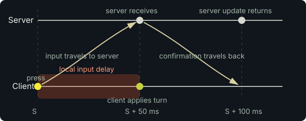
Clock Synchronization
Some games like StarCraft and League of Legends can tolerate a bit of input delay, but Armagetron and shooters like Counter-Strike cannot. So there’s a trick to eliminate it: instead of synchronizing perfectly with the server,4 the client can purposely shift its simulation clock ahead of the server by an extra RTT/2 (where RTT is round-trip-time, another name for “ping”). This way inputs can be applied immediately in the local sim (at time S + RTT/2 where S is the server time) and arrive just in time to be applied at the same time on the server.5
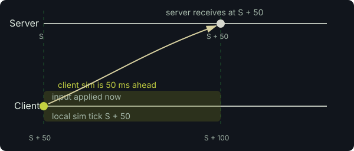
RTT/2 ahead removes input delay.
This effectively converts the cost of input delay into additional staleness/age of remote entities by delaying the client’s view of the world by an extra RTT/2. So you still pay the cost of client-to-server latency, just via extra world lag instead of input delay.
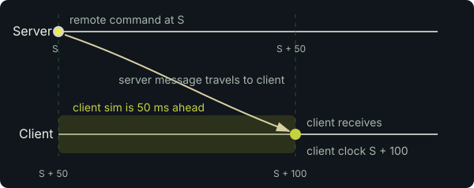
Here we come to the essence of ping charity: it is technically possible for a client to eliminate input delay without increasing their world lag, by having everyone else pay the cost of their client-to-server latency.6 But the server must do some work to make that happen.
Rewriting History
Specifically, the server must be able to rewrite history by retroactively inserting player actions into the past. This can be done via rollback, i.e., rewinding the simulation (or resetting to a snapshot), applying the action, and fast-forwarding back to the present time. This also requires determinism of the simulation to work well. Rollback netcode is commonly associated with peer-to-peer networking in fighting games (see, e.g., GGPO) but we’ll see here that it has a role to play in the client-server model.
Armagetron doesn’t do full rollback of the entire game state, but it does support a limited kind of rollback where it rewinds a cycle (moving it in reverse), applies the backdated command, then fast-forwards it back to the present time. By “moving it in reverse” I mean it literally runs the cycle’s usual movement code (Verlet integration) with a negative timestep. And it only rewinds the cycle; the rest of the world remains fixed in the present time (or the future from the re-wound cycle’s point of view) throughout the process.
There are some subtle limitations and edge cases with this approach (e.g., the cycle can’t be re-wound across different wall segments, and contradictions can arise between the cycle’s new movement and existing walls, causing the infamous “insta-death” phenomenon), but it works fine most of the time.
Here’s a simplified example to illustrate the point. First let’s see what happens normally, without rollback. Alice and Bob both lead the server by 50ms to eliminate input lag, so they see each other’s actions with 100ms latency:
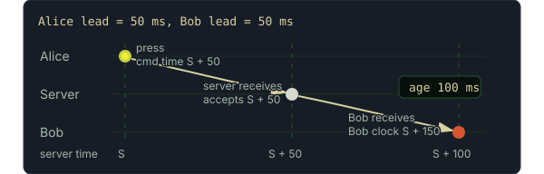
From Bob’s perspective there is a 100ms window of uncertainty about Alice’s current position and orientation (and vice versa). Armagetron renders a visualization of this uncertainty called a lag-o-meter (or sometimes “lag diamond”):
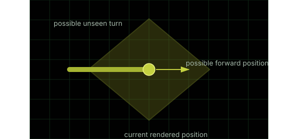
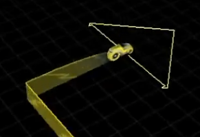
Now let’s have Bob “take over” half of Alice’s ping: the server gives 50ms rollback leniency to Alice but not to Bob. Alice runs her clock in perfect sync with the server’s, while Bob leads by 50ms.
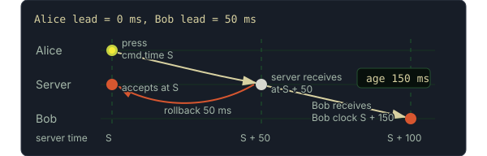
Bob sees Alice’s command with a perceived delay of 150ms. And consider when Bob sends a command:
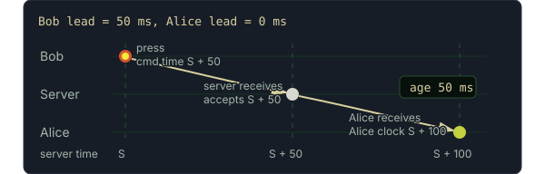
Alice sees Bob’s command with a delay of only 50ms! Viewed as lag-o-meters:
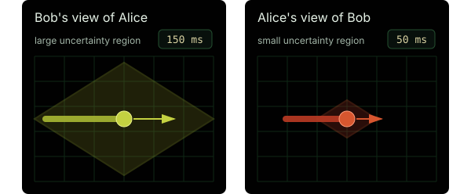
In this example the server is playing favorites, giving Alice special rollback privilege. And Alice takes advantage by shifting her clock. Note that both Alice and the server have to do their respective parts to make this work.
Bob’s uncertainty around Alice is large because 1) he has to lead the server by 50ms to remove his own local input delay, and 2) he pays an additional 50ms in charity for removing Alice’s input delay. Meanwhile, Alice gets zero input delay for free, so her uncertainty around Bob is due to nothing more than the one-way latency from the server to her.
The total perceived lag between Alice and Bob is always the same (200ms here), but the “charity” mechanism illustrated here allows the server to decide how it should be distributed between them. As we’ve seen, this can be used to give an unfair advantage to one player over another. But it can also be used to promote fairness by correcting for the natural disadvantage of having a higher ping.
Equal Ping for All
Ping charity doesn’t play favorites; it is universal. And its purpose is to eliminate lag disparity, not to introduce it. It works like this:
- The server chooses a ping charity amount (say, 50ms) and affords it to all clients as a blanket rollback leniency (clamped by their
RTT/2), and - Each client synchronizes its clock to
serverClock + max(0, RTT/2 - ping_charity).
Although ping charity applies equally to everyone, we see that each client’s RTT/2 places an upper bound on how much they can benefit from it. In the special case when all clients have equal pings, the effect of ping charity is nullified (since all clients equally “pay” for one another). But it gets interesting when the clients have different pings.
Let’s take the example from Armagetron’s network docs. Alice has 160ms ping and Bob has 60ms ping. With no ping charity, Bob sees Alice with 60ms of effective lag, while Alice sees Bob with 160ms. With 50ms of charity, the two values meet in the middle at 110ms.
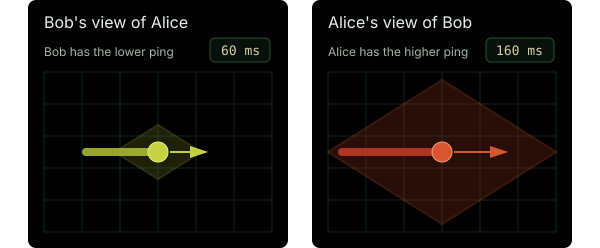
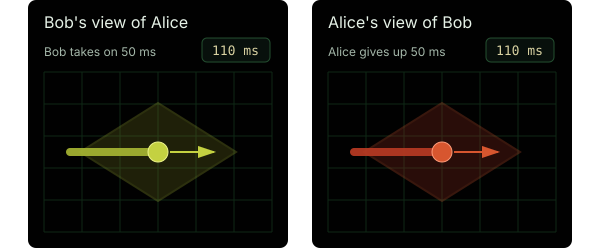
The size of lag-o-meters is based on the speed of the peer’s cycle and the effective lag computed by the following formula:
effective lag shown by me for peer =
clamp((myPing + peerPing) / 2,
myPing - charity,
myPing + charity)Notice that when charity=0, the effective lag for any peer is myPing. That is, with no ping charity, my lag depends only on my connection to the server. But with sufficiently large charity, the effective lag is the average of our individual pings (and this can be different for each peer). The total lag between us is invariant for any value of charity.
The tradeoff
Rollback can cause visible snapping of remote entities. But in some contexts (including Armagetron) the tradeoff is very much worth it. The creator of GGPO explained it nicely (in the context of Street Fighter):
The latency is hidden in the window between when your opponent initiates an action and your simulation realizes that an action was performed. The time lost in that window is effectively skipped to your simulation.
…
This is not ideal, but the alternative is to delay the entire simulation by 60ms, including local inputs. In practice, losing those 60ms of animation usually results in a greatly preferable user experience. This is partially due to the greatly increased responsiveness of local actions, but is also because most of the time those 60ms just don’t matter that much.
Armagetron in the Browser
This investigation of ping charity is part of a broader side project of mine to create an Armagetron clone for the web. Previous attempts to put Armagetron in the browser have largely failed when it came to netcode, because 1) it’s difficult and 2) web browsers notably do not support raw UDP sockets, so you can’t just port Armagetron’s netcode and expect it to work the same.
I haven’t chosen a name yet, so we’ll just call it Webtron for now. It’s a full rewrite in TypeScript.7 The core physics and gameplay systems are based on Armagetron’s code, but the networking model is totally different. It uses an event history model, with a fully deterministic simulation implemented as a discrete tick step function parameterized by the events for that tick. Clients propose input events to be added to the history at a scheduled tick. The server accepts or postpones them as needed and broadcasts the authoritative history of events to all clients. When a new client joins (or a resync is requested), it is given a snapshot of the state and all the events up to the present tick so it can sync up.
The current implementation is basically a netcode tech demo. There’s a single live instance here running on a cheap server in Chicago. Occasionally the server is a bit unstable.
The event history model with deterministic simulation is cool because it enables proper rollback of the entire game state, which means, among other things, that it supports ping charity without any limitations or weird edge cases.
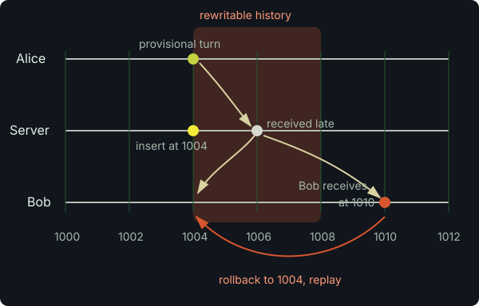
Ping charity in Webtron works essentially the same as in Armagetron. It continuously rewrites history on the fly to accommodate high-ping clients, who purposely desync their clocks to take advantage of it.
History rewriting is a powerful tool. It’s fun to speculate how it might be useful in other interesting ways. I have found one thing: a purely client-side optimization that uses local history rewriting to enhance responsiveness of controls.
Negative Input Delay
Input latency is not just one-way latency from client to server, but also the local latency between when you press the key and when it gets processed by the client code. Typically this processing happens at a fixed rate, once per tick, so the latency can range anywhere from zero to a full tick duration depending on when during the tick’s lifetime you happen to press the input.
The worst point is right after inputs are processed for the current tick, causing you to experience a full tick of input latency. But we can remedy this somewhat with local rollback, by sending inputs that occurred in the first half of a tick back in time to the previous tick. This requires rolling back and replaying the last tick. With this technique, input latency ranges over [-0.5, 0.5] ticks instead of [0, 1].
Moreover, in the browser, inputs are handled via an asynchronous event queue, and there is a significant and somewhat unpredictable latency between when the input is pressed and when it is received by your input handler. With local rollback, we can also mitigate that delay by measuring it and backdating inputs further by that amount.
In short: when processing an input, we compute an effective timestamp by subtracting a half-tick duration plus the browser queue latency. If that timestamp lies in the previous tick, we insert it in the history for the previous tick, roll back, and replay. The caveat is that we have to increase our clock lead to compensate (remember that removing input latency trades off for increased world lag); there is no free lunch.
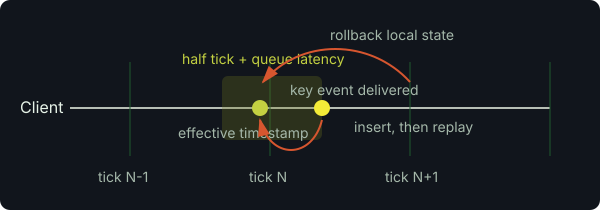
I call this “mind reader” input processing because it’s as if the game knew ahead of time what you were going to press. Unlike rollback used to hide network latency, negative input delay usually does not produce perceptible visual artifacts, especially at high tick rates.
I haven’t seen this exact technique described elsewhere, but I have found some existing notions of “negative input latency”:
- A more coarse-grained mechanism for providing forgiveness for late inputs in rhythm games like Fortnite Festival, and
- Server-side prediction techniques in cloud-based gaming services like Google Stadia.
Here is a description of the latter from a blog post by Nolan Nicholson:
Stadia’s VP of Engineering proclaimed that the service would have negative latency. The buzzword itself implied some kind of physically impossible time travel, but the real explanation was more modest: “‘Negative latency’ is a concept by which Stadia can set up a game with a buffer of predicted latency between the server and player, and then use various methods to undercut it. It can run the game at a super-fast framerate so it can act on player inputs earlier, or it can predict a player’s button presses.”
“Physically impossible time travel”, hah! With rollback, time travel is possible. :)
The result of all this (negative input delay and server-side rollback-based lag compensation with ping charity) is a freakishly responsive gameplay experience in the browser that feels somewhat magical. Work on the implementation has stalled as I’ve gotten busy and interested in other things. There’s a similar project here that appears to have working netcode, but I don’t think it implements any of the ideas described here.
Appendix
Rollback netcode and frame advantage
The GGPO SDK implements rollback networking for peer-to-peer games. In that setting there is no single authoritative server clock, but if the peers are not properly synchronized with one another one side can benefit more from rollback than the other. GGPO calls this imbalance “frame advantage.” This excellent article explains:
“Frame advantage” is GGPO’s concept of how much of an advantage, in frames, the local player has due to wall clock skew.
…
For example, suppose we calculate that the frame_advantage is 2. This means we believe a neutral observer located equidistant from our two games and equipped with a very good spyglass would see my game rendering frame 20 at the exact instant an opponent’s game is rendering frame 22.
…
Each connection peer in a GGPO session is always aware of his local frame advantage and receives periodic updates as to his peer’s calculation of frame advantage. GGPO will attempt to keep the game “fair” by making sure that the local and remote frame advantages agree to within a one-frame tolerance.
GGPO attempts to balance frame advantage. Ping charity equalizes perceived lag by purposely giving frame advantage to higher-ping players.
Client-server rollback
The fighting game 2XKO uses a client-server variant of GGPO. They refer to the balancing of frame advantage as “rift balancing”:
If I see a three-frame rollback, you should be seeing the same. If I’m seeing five-frame rollbacks and you’re only seeing one-frame rollbacks, it’s likely because the rift isn’t balanced.
…
Without getting too much into the weeds, balancing the rift means synchronizing the game clocks of every player in the game.
“Favor-the-shooter” lag compensation
Another related technique is the “favor-the-shooter” lag compensation (i.e., “rewind time”) used in first-person shooter games like Counter-Strike.
It works like this: when a player fires, the server rewinds the world (other players’ positions, hitboxes) to where they were on the shooter’s screen at the moment of the click, then resolves the hit there. Like ping charity, this lets a late-arriving input be applied retroactively, and the cost is paid by the other party. The target can be killed “behind cover” from their own perspective because they had already moved by the time the shot landed on the server.
The rewind mechanism is similar to Armagetron’s except that it rewinds other players rather than the one who issued the command, and is a per-shot hit-resolution rule whereas ping charity is more of a continuous movement-latency policy. The part of ping charity that is missing entirely from favor-the-shooter is deliberate desyncing of the high-ping client’s clock.
This forum post from 2006 gives some insight into ping charity, but I admit I find it more confusing than helpful.↩︎
This forum thread contains some amusing discussion on Armagetron’s code quality. “yes, it’s all spagetti and he has said so himself - but it works better than any competition at what is most important: gameplay!”↩︎
The rewinding mechanism is also used for a blanket lag compensation system that gives all clients some leeway up to a limited “lag credit” budget. Initially, I assumed it existed for lag compensation first and was re-purposed later for ping charity. But the truth is the opposite: ping charity existed in the game as early as 2000, and the lag credit system wasn’t added until 2006!↩︎
Assuming stable network conditions and that
RTT/2is a good approximation of one-way latency from client to server.↩︎The sleight of hand here is that the “ping” in ping charity means perceived lag, not physical network latency.↩︎
Most of the code was written by Codex (GPT-5.2). There’s a lot to say about the development experience, but that’s not the focus here.↩︎